Pipeline:
cv2.calibrateCamera() to compute the camera intrinsics (\(K\)) and distortion coefficients\[ \mathbf{K} = \begin{bmatrix} f_x & 0 & o_x \\ 0 & f_y & o_y \\ 0 & 0 & 1 \end{bmatrix} \]
where \((f_x, f_y)\) are the focal lengths and \((o_x = image\_width/2,\; o_y = image\_height/2)\) are the principal points
Why use ArUco Tags:
OpenCV provides reliable detectors for ArUco markers, allowing us to automatically obtain the 2D pixel coordinates (u,v) of each marker's corners. Since the real-world size of each tag is known, we can assign consistent 3D world coordinates to these corners. With the 2D–3D correspondences from multiple images, we can run camera calibration (solvePnP + calibration routines) to estimate the camera's intrinsic parameters and poses.
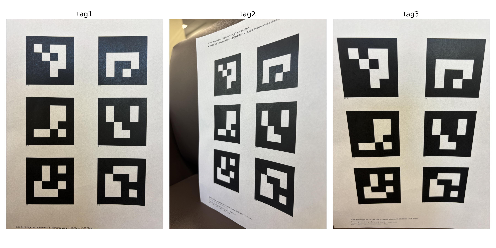
[ArUco_tags] Example ArUco tags used for calibrationResults of the 40 images I took:
$$ Reprojection\_error = 2.1737686759 $$
$$ K = \begin{bmatrix} 4.44686 \times 10^3 & 0 & 2.18285 \times 10^3 \\ 0 & 4.44342 \times 10^3 & 2.90192 \times 10^3 \\ 0 & 0 & 1 \end{bmatrix} $$
\begin{aligned} distortion\_coefficients = [0.05917989, -0.24526054, \\ \quad 0.00250248, 0.00135429, 0.23005914] \end{aligned}
Why need to use the same camera and zoom level:
Camera calibration estimates the intrinsic parameters of a camera and we want an intrinsic matrix (K) shared across different views. K is consisted of focal lengths (\(fx\), \(fy\)) and principal points (\(ox\), \(oy\)), which vary with the camera and zoom level, so we want these parameters to be the same.
Why use 6 tags rather than a single tag as instructed:
ArUco tags are for detecting (u,v) coordinate (explanation see Part0.1), so the object cannot obscure the tag(s). As we are going to take photos around the object, if there's only one tag, then it will certainly be obscured. So eventually I chose 6 tags.
Some object views (45 in total):
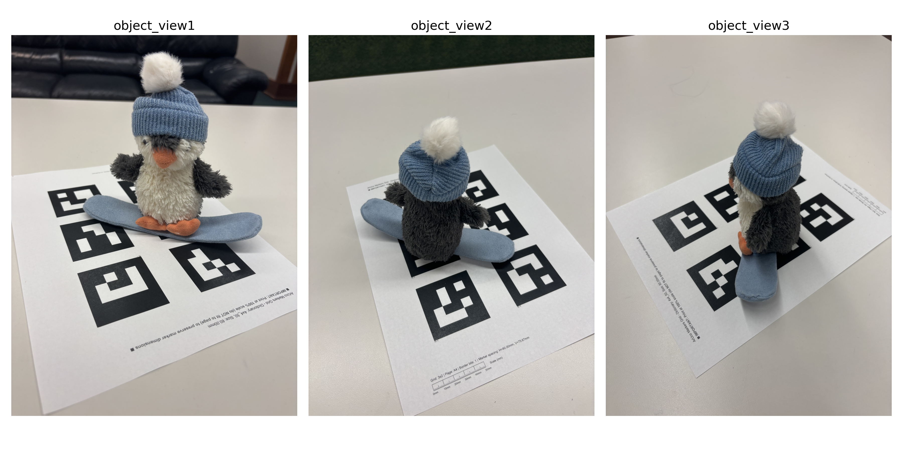
After calibrating the camera, we can use its intrinsic parameters to determine the pose (orientation and position) for each object image. This reduces to the classic Perspective–n–Point (PnP) problem: given a set of 3D points in the world and their corresponding 2D projections in an image, we estimate the camera’s extrinsic parameters.
For each image in the object scan, we detect the single ArUco marker and use
cv2.solvePnP() to recover the camera pose.
1. Inputs to solvePnP:
objectPoints: The 3D coordinates of the ArUco marker’s corners in world space. Because the tag’s
physical dimensions are known (here we used 0.6m again), these points can be defined explicitly.
imagePoints: The detected 2D pixel locations of the tag corners in the image (obtained from
detectMarkers()).
cameraMatrix: The intrinsic matrix \(K\)
distCoeffs: The distortion coefficient vector.
2. Outputs from solvePnP:
success (bool): Indicates whether pose estimation was successful.rvec (numpy array of shape (3, 1)): The rotation expressed as a Rodrigues vector (convertible to a \(3 \times 3\) rotation matrix using
cv2.Rodrigues()).
tvec (numpy array of shape (3, 1)): The translation of the camera expressed in world coordinates.
These outputs define the world-to-camera transformation (\(w2c\)). Since later stages require the camera-to-world matrix (\(c2w\)), we will compute its inverse.
I captured 45 images of the object I chose so there are 45 cameras. Here are two screenshots of my cloud of cameras in Viser showing the camera frustums' poses and images.
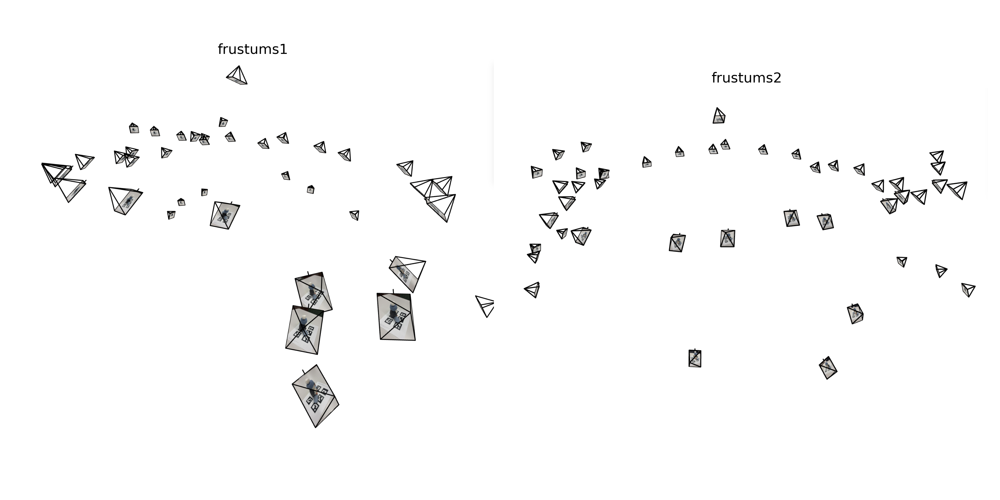
NeRF assumes a perfect pinhole camera model without distortion, so we need to avoid any lens distortion in the images.
Comparison between the original image and the undistorted one (left: original; right: undistorted):
They look quite similar since I'm confident in the quality of my images, but still, there are some differences if you compare the edges of each pair.
View 1 (left: original; right: undistorted):
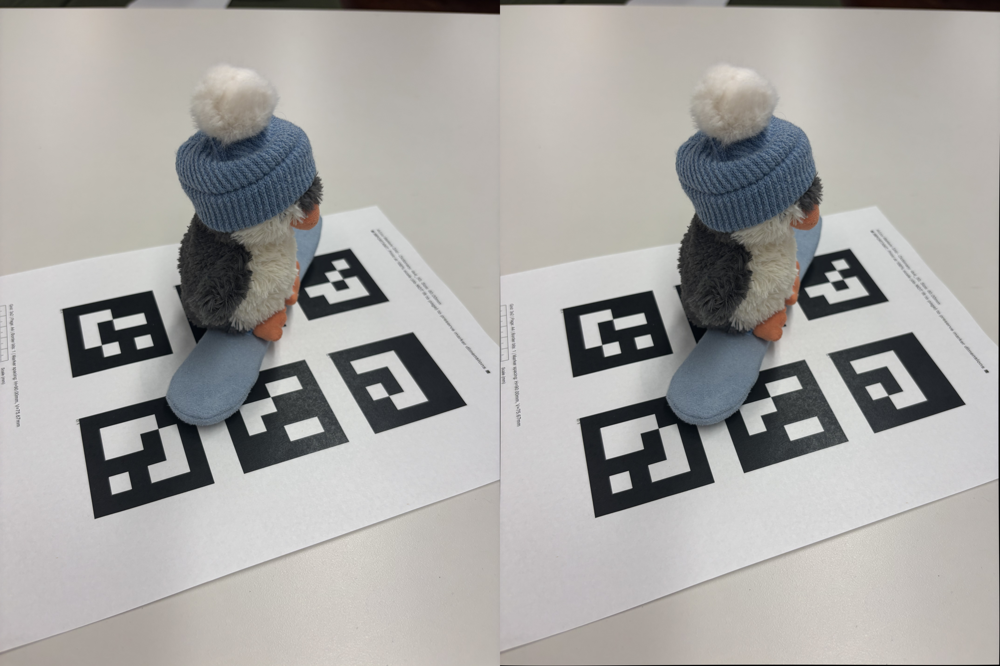
View 2 (left: original; right: undistorted):
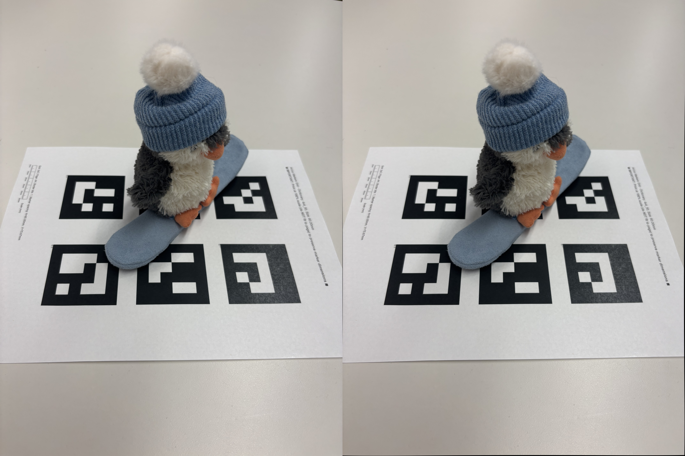
Used 45 images to create my own dataset (result stored as my_data.npz):
$$ \begin{align} &images\_train: (35, 286, 214, 3) \\ &images\_val: (6, 286, 214, 3) \\ &c2ws\_train: (35, 4, 4) \\ &c2ws\_val: (6, 4, 4) \\ &c2ws\_test: (4, 4, 4) \\ &H, W = 286, 214 \\ &focal = 222.13582064842802 \end{align} $$
Eventually we want 3D NeRF, but let's do a 2D one first:
$$ 3D: F: \{x, y, z, \theta, \phi\} \rightarrow \{r, g, b, \sigma\} $$
$$ 2D: F: \{u, v\} \rightarrow \{r, g, b\} $$
Input: 2D coordinates
Output: 3D RGB values
Depth: 4 hidden layers
Width: 32 or 256 neurons per hidden layer
Activation Functions: ReLU for all hidden layers, Sigmoid for the output layer
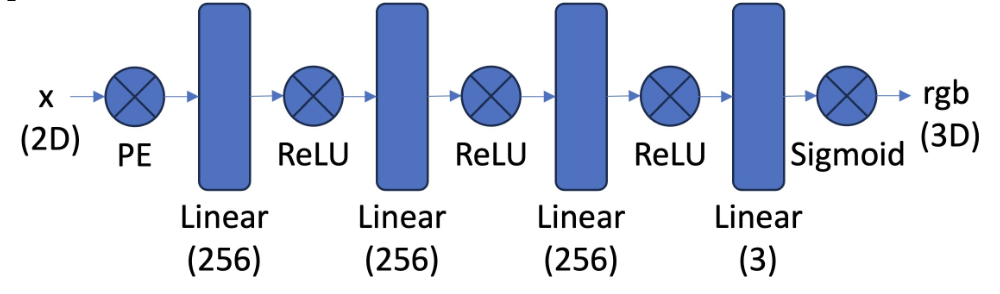
Training Hyperparameters:
Learning Rate: 0.01
Batch Size: 10k
Training Iterations: 3000
Positional Encoding (Important Trick for Reconstructing Details):
MLPs are biased toward learning very smooth, low-frequency functions (spectral bias). They learn low-frequency patterns easily but struggle with high-frequency signals (sharp edges, textures, glossy highlights). Without positional encoding, the input of the MLPs are low-dimension, leading to blurry output images since the MLPs cannot learn the details well. Positional encoding basically expands the input from low dimensions to high dimensions using the formula below.
$$ PE(x) = \{x, \sin(2^0\pi x), \cos(2^0\pi x), \sin(2^1\pi x), \cos(2^1\pi x), \ldots, \sin(2^{L-1}\pi x), \cos(2^{L-1}\pi x)\} $$
in which L is the highest frequency level
Max Frequency Parameter (L): 3 or 10
Input dimention:
$$ 2 + 4 \times L \quad (e.g., L = 10 \text{ gives } in\_dim = 42) $$
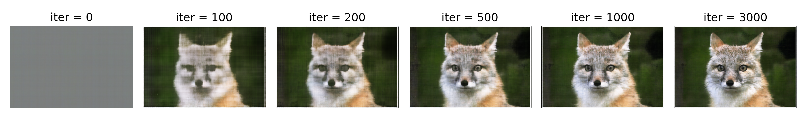
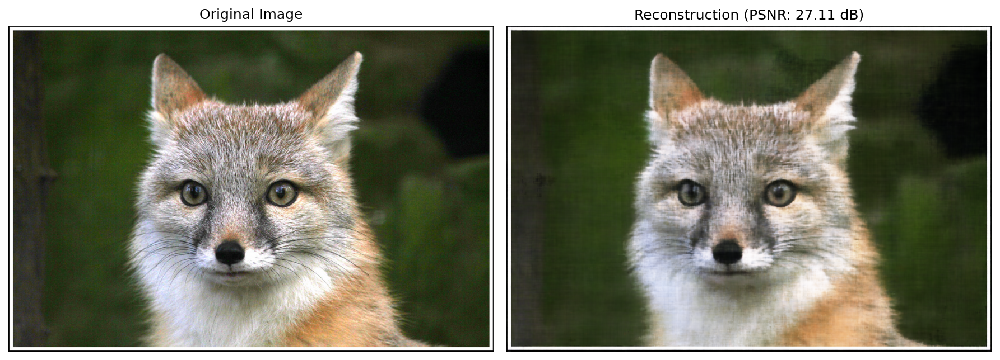
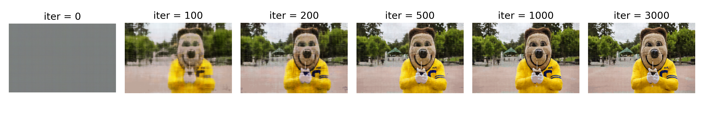
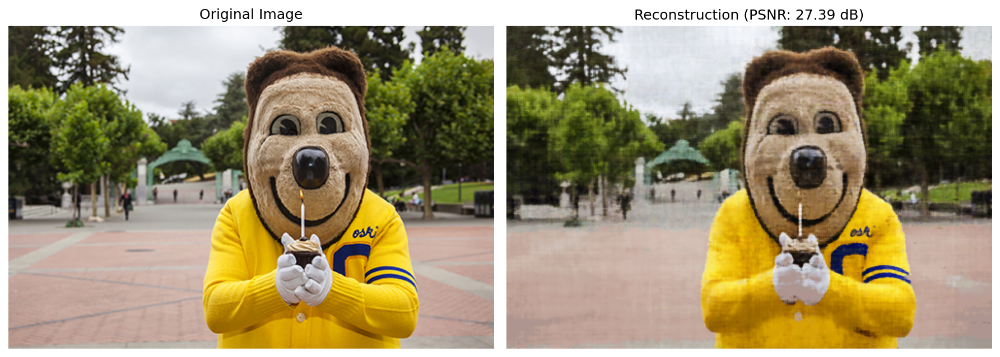
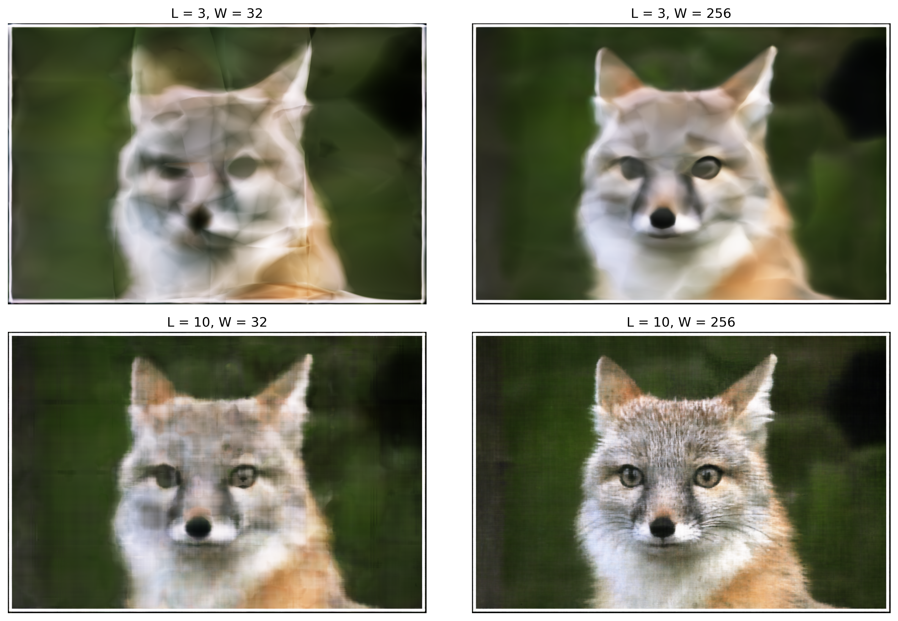
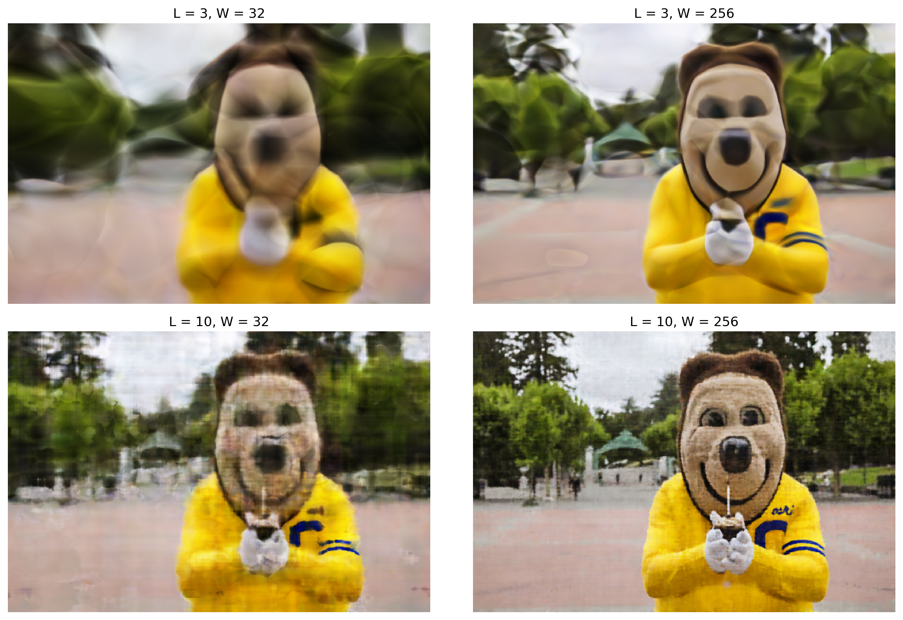
Explanations:
Changing L (max frequency level):
Controls what frequencies the network can represent. Low L acts as strong low-pass filter; High L can represent high-frequency detail.
Changing W (width of the MLP):
Controls the complexity of the nenural network function. The number of parameters increase as W increases,
and in neural network, the more parameters the more detailed expressions.
To calculate PNSR:
\( \text{PSNR} = 10 \cdot \log_{10}\left(\frac{1}{\text{MSE}}\right) \)
PSNR curve for my own image (four cases):
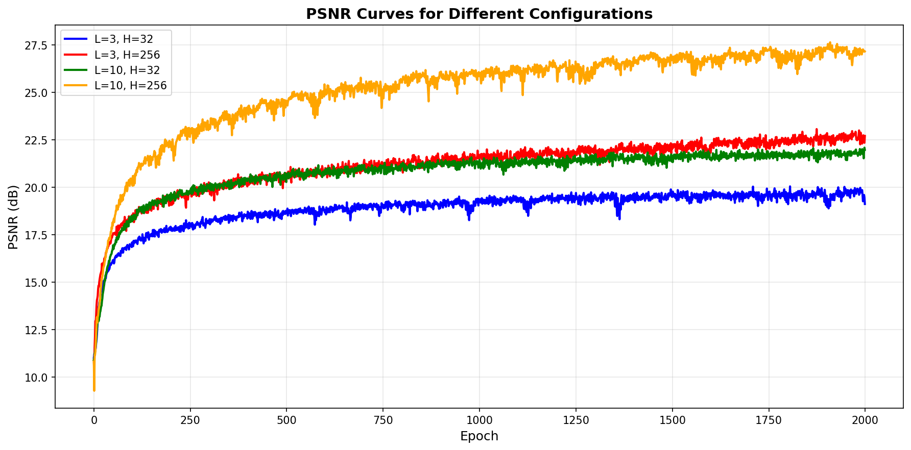
[psnr_curves_oski] PSNR curves during training for Oskidata = np.load(f"lego_200x200.npz")
# Training images: [100, 200, 200, 3]
images_train = data["images_train"] / 255.0
# Cameras for the training images
# (camera-to-world transformation matrix): [100, 4, 4]
c2ws_train = data["c2ws_train"]
# Validation images:
images_val = data["images_val"] / 255.0
# Cameras for the validation images: [10, 4, 4]
# (camera-to-world transformation matrix): [10, 200, 200, 3]
c2ws_val = data["c2ws_val"]
# Test cameras for novel-view video rendering:
# (camera-to-world transformation matrix): [60, 4, 4]
c2ws_test = data["c2ws_test"]
# Camera focal length
focal = data["focal"] # float
1. Camera to World Coordinate Conversion
A point observed in world coordinates \(\mathbf{X}_w = (x_w, y_w, z_w)\) can be mapped into the camera’s coordinate frame \(\mathbf{X}_c = (x_c, y_c, z_c)\) through a rigid transformation consisting of a rotation \(\mathbf{R}_{3\times3}\) and a translation vector \(\mathbf{t}\):
\[ \begin{bmatrix} x_c \\ y_c \\ z_c \\ 1 \end{bmatrix} = \begin{bmatrix} \mathbf{R}_{3\times3} & \mathbf{t} \\ \mathbf{0}_{1 \times 3} & 1 \end{bmatrix} \begin{bmatrix} x_w \\ y_w \\ z_w \\ 1 \end{bmatrix} \]
This block matrix is commonly referred to as the world-to-camera (\(w2c\)) extrinsic matrix. Taking its inverse gives the camera-to-world (\(c2w\)) transform, which maps points back into world space.
2. Pixel to Camera Coordinate Conversion
In a standard pinhole camera model, the intrinsic matrix \(\mathbf{K}\) encodes the focal lengths \((f_x, f_y)\) as well as the principal point \((o_x = image\_width/2,\; o_y = image\_height/2)\). This matrix takes a point in the camera’s 3D coordinate system and projects it onto the 2D pixel plane:
\[ \mathbf{K} = \begin{bmatrix} f_x & 0 & o_x \\ 0 & f_y & o_y \\ 0 & 0 & 1 \end{bmatrix} \]
Using this intrinsic matrix, a 3D camera-space position \((x_c, y_c, z_c)\) is mapped to pixel coordinates \((u, v)\) as follows:
\[ s \begin{bmatrix} u \\ v \\ 1 \end{bmatrix} = \mathbf{K} \begin{bmatrix} x_c \\ y_c \\ z_c \end{bmatrix}, \quad\text{where } s = z_c \]
3. Pixel to Ray
A ray can be represented by two components: an origin \(\mathbf{r}_o \in \mathbb{R}^3\) and a direction vector \(\mathbf{r}_d \in \mathbb{R}^3\). For a pinhole camera, we construct one such ray for every pixel \((u, v)\) in the image.
If we denote the camera-to-world matrix as \[ \begin{bmatrix} \mathbf{R} & \mathbf{t} \\ \mathbf{0} & 1 \end{bmatrix}, \] then the origin of all rays is simply the translation component:
\[ \mathbf{r}_o = \mathbf{t} \]
To obtain the direction, we take a point along the ray at depth \(s = 1\) in camera coordinates, convert this point to the world frame using the previous transformations, and subtract the ray origin. Finally, we normalize the resulting vector:
\[ \mathbf{r}_d = \frac{ \mathbf{X}_w - \mathbf{r}_o }{ \lVert \mathbf{X}_w - \mathbf{r}_o \rVert_2 } \]
1. Sampling Rays from Images
To sample N rays at every training iteration:
I chose Option 2.
The main idea of sampling rays from images are also illustrated below (give credit to Aqeel Anwar: https://medium.com/data-science/a-12-step-visual-guide-to-understanding-nerf-representing-scenes-as-neural-radiance-fields-24a36aef909a).
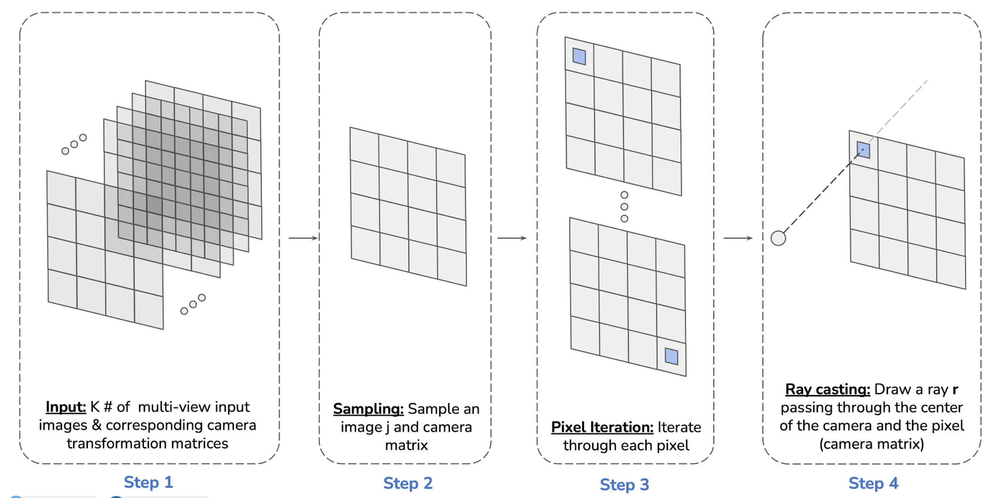
2. Sampling Points along Rays
Once we obtain a ray, NeRF evaluates the scene at several points along that ray to approximate the continuous volumetric rendering integral. This requires selecting a sequence of depth values between a near bound and a far bound, then converting each depth value into a 3D coordinate using \(\mathbf{x}(t)=\mathbf{r}_o+t\mathbf{r}_d\). To avoid overfitting to a fixed set of 3D locations, the depth samples are typically perturbed slightly within their intervals during training. These sampled 3D points are then fed into the NeRF model to query density and color, which are later accumulated to compute the pixel’s predicted RGB value.
(for lego.npz) near = 2.0, far = 6.0, n_samples = 64
Again, here's an illustration from Aqeel Anwar. After we get the corresponding ray from a pixel, we sample a specific number of 3D points along the ray between the near plane and the far plane. Then, each 3D coordinate (xyz) as well as the corresponding view direction (2D) would be put into the MLP for training. For a specific ray, the viewing directions for all the points are the same.
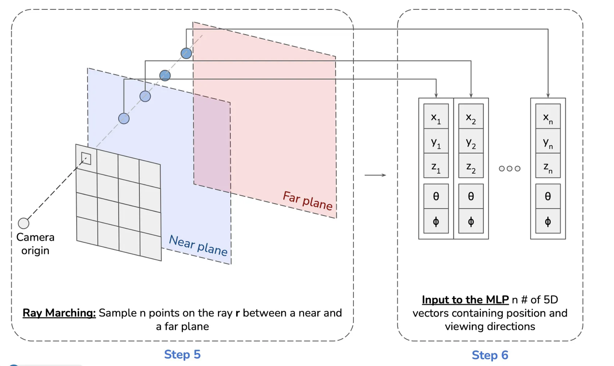
I constructed a RaysData class, which is basically the custom dataloader used in NeRF. Its job is to store the multi-view images and their camera poses, convert pixel coordinates into rays, and randomly sample rays during training. For a more detailed walk through, it first converts all inputs to tensors on the same device, then precomputes a full pixel grid for each image and associates every pixel with its camera index. When sample_rays(B) is called, the dataloader uniformly selects B pixels from all cameras, retrieves the corresponding camera-to-world matrices, and converts each pixel into a world-space ray by computing its origin at the camera center and its direction from normalized camera-space coordinates. Eventually, the function returns ray origins, directions, pixel coordinates, and camera IDs.
Using the provided code, ere are two images of the frustums:
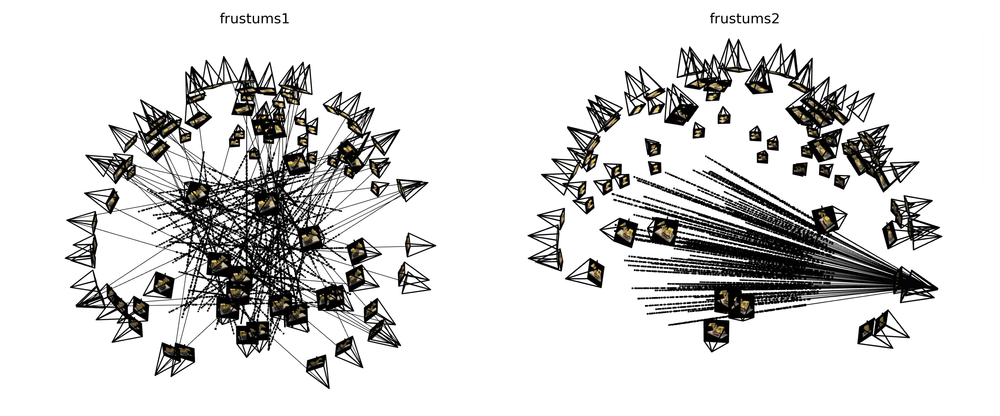
[lego_frustums] Camera frustums for the Lego datasetWe simply adjust the following ways of the model architecture of 2D NeRF:
1. Input:
2. Output: color (3D) + density (new, 1D)
3. Model:
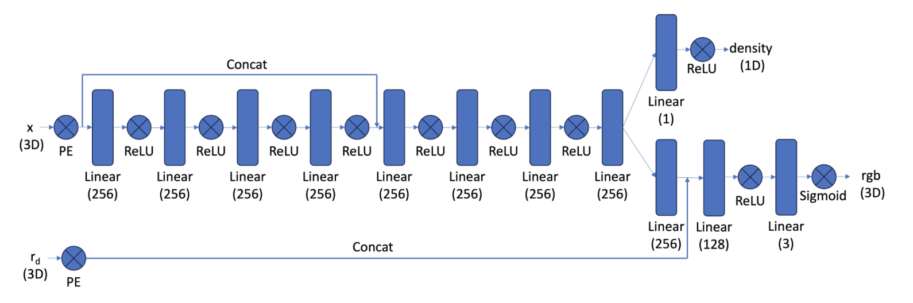
[3d_model] Architecture diagram of the 3D NeRF model4. Hyperparameters (for lego.npz):
Volume rendering describes how a ray accumulates color as it travels through a scene. At every tiny step along the ray, the local density \( \sigma \) determines how likely the ray is to "stop" and reveal the color there, while the transmittance \( T(t) \) controls how much light from farther points can still pass through. The continuous formulation integrates these infinitesimal contributions:
\[ C(\mathbf{r}) = \int_{t_n}^{t_f} T(t)\,\sigma(\mathbf{r}(t))\,c(\mathbf{r}(t),\mathbf{d})\, dt, \qquad T(t) = \exp\!\left(-\int_{t_n}^{t} \sigma(\mathbf{r}(s))\, ds\right) \]
Since pixels are discrete, NeRF uses a discrete approximation. The ray is sampled at \(N\) points, and each point contributes its color depending on (1) the probability the ray has not terminated before that sample (the accumulated transmittance \(T_i\)) and (2) the probability of terminating at that sample. Summing these weighted contributions yields:
\[ \hat{C}(\mathbf{r}) = \sum_{i=1}^{N} T_i \left(1 - \exp(-\sigma_i \delta_i)\right)c_i, \qquad T_i = \exp\!\left(-\sum_{j=1}^{i-1} \sigma_j \delta_j \right) \]
Here, \(c_i\) is the color predicted at sample \(i\), \(T_i\) is the probability that the ray reaches sample \(i\) without terminating, and \(1 - e^{-\sigma_i \delta_i}\) is the probability of ending at that point.
Blue dots: cameras (ray origins)
Green lines: rays (100 rays are a bit too crowded so I chose 50)
Orange triangles: samples along the rays
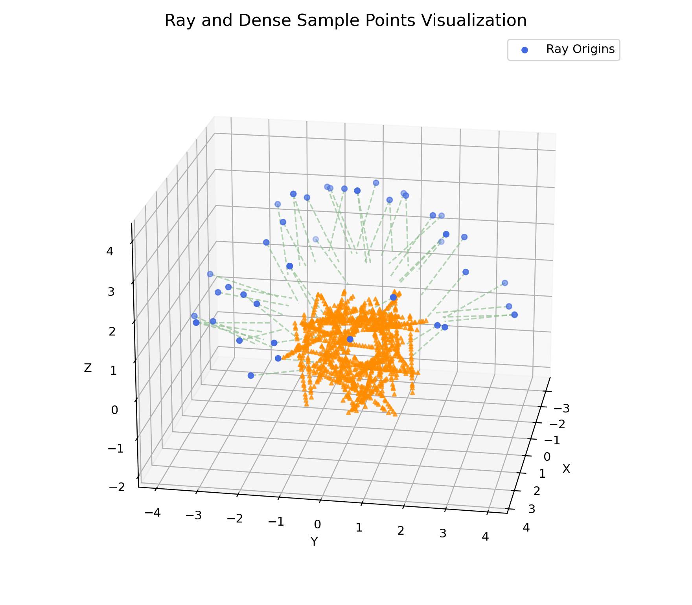
[rays_dense_newcolor] Visualization of camera positions, rays, and sample points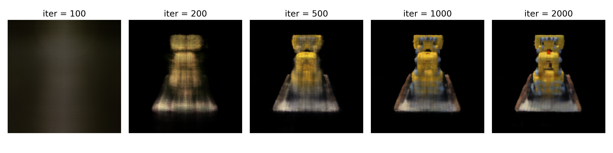
[lego_training_process] Training progression showing predicted images improving over iterations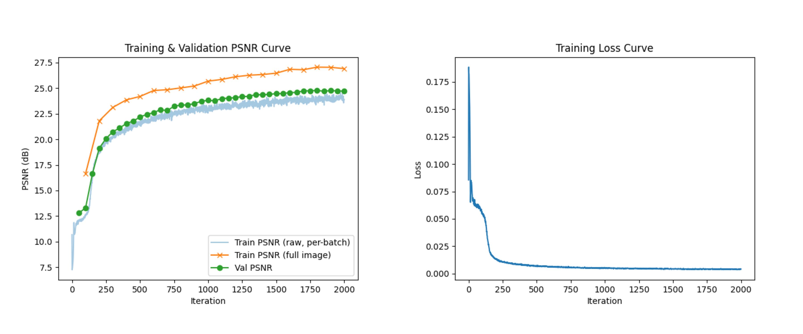
We use c2ws_test to generate novel views of the reconstructed object.
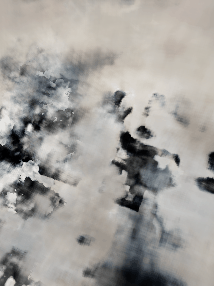
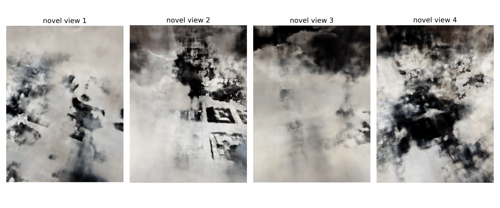
IMPORTANT: The scene seems broken but it's because the number of gradient steps is not enough and unfortunately I'm running out of time, but if you look at the intermediate rendered scenes below, you would find that the implementations are correct.
Also, the final PNSR is over 25dB (see in the PSNR curve below).
Changes in the code: no changes other than changing render_video() to render_gif()
Analysis: Since the number of frustums is fewer than the one of lego and lego's frustums are better distributed, we want to increase the number of iterations, which would increase the quality as well as the training time. The two parameters 'near' and 'far' are adjusted based on the visualized scene using viser so that the sample points on the rays would be within the sphere of frustums and at the same time cover as much space as possible.
Blue dots: cameras (ray origins)
Green lines: rays (100 rays are a bit too crowded so I chose 50)
Orange triangles: samples along the rays
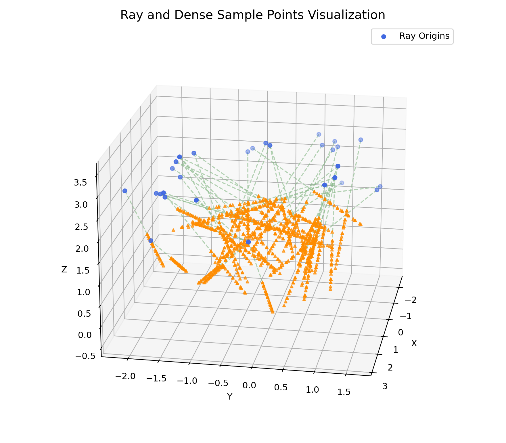
[rays_dense_newcolor] Visualization of camera positions, rays, and sample points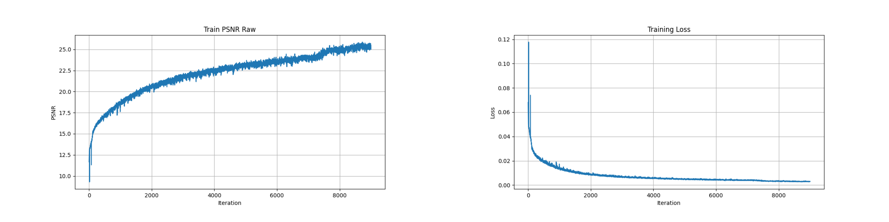
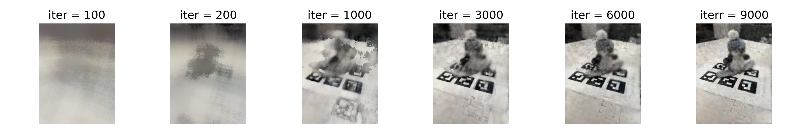